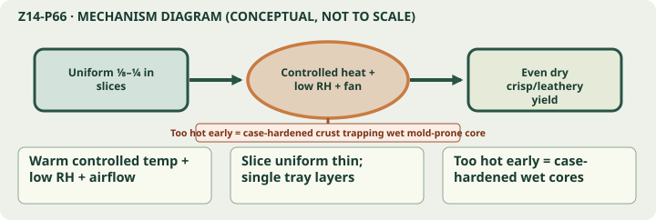

Z14-P66 · Food production and preservation · New manuscript
Balance temperature, low humidity, and continuous airflow for safe home drying
Remove moisture evenly from fruits, herbs, vegetables, and meats before spoilage microbes or case-hardening ruin the batch.
When it applies · Electric food dehydrators with thermostats/fans and controlled low-heat oven drying.
Equipment · Electric dehydrator with thermostat and fan (preferred), accurate thermometer, thin uniform slicing knife/mandoline, and airtight dry storage jars.

Actions
- Control ALL THREE drying pillars simultaneously: 1) Controlled warm temperature (typically ~95–115°F for herbs, ~125–135°F for vegetables/fruits, ~145°F for pre-heated meat jerky—exact NCHFP target per food), 2) Low ambient humidity, and 3) Steady air circulation to carry evaporating water vapor away.[P11]
- Slice food pieces to uniform thin thickness (roughly ⅛ to ¼ inch) arranged in a SINGLE non-overlapping layer on mesh trays so pieces dry at the exact same speed instead of leaving thick damp centers beside burnt edges.[P11]
- Avoid cranking temperatures too high early—excessive initial heat cooks and seals the outside crust ("case-hardening"), trapping hidden moisture inside the core that grows mold silently weeks later inside storage jars.[P11]
Failure recognition · Setting a kitchen oven to 225°F to "speed up drying apples," scorching dry crusts around wet mushy interiors that mold in the jar.[P11]
Verify · Confirm uniform thin slices, single non-overlapping tray layers, verified thermostat target temperature, and continuous exhaust airflow.[P11]
Stop or change course · Sticky condensation or sour odor during slow damp-weather drying indicates inadequate heat/airflow—discard spoiling trays cleanly.[P11]
Evidence and editorial notes
- P11 · NCHFP · Drying Foods Safely (current web edition)
- Section: Drying Foods > Pretreatment, Temperature Control, Airflow, and Conditioning · Conditions: Electric dehydrators, controlled low ovens, or approved solar dryers for fruits, herbs, vegetables, and jerky
Support: Control temperature, low humidity, and continuous airflow simultaneously to remove moisture before spoilage occurs; blanch vegetables where directed, heat meat to safe internal temperatures per NCHFP jerky guidelines, and condition dried fruits to equalize residual moisture before airtight storage.
Limitations: Case-hardening (too hot early) traps wet interiors that mold in storage; open-air outdoor drying fails in humid climates like Upper Midwest summers. · Conflicting evidence: None; separates safe controlled dehydration from high-risk raw-meat drying.
Editorial note: Grounds dehydration equipment, jerky safety, and moisture-equilibrium checks. · Specialist reviewer: Food preservation and food safety specialist
Primary source · checked 2026-11-24
Source lineage · NCHFP Drying Foods Safely; new manuscript · Classification · New manuscript.